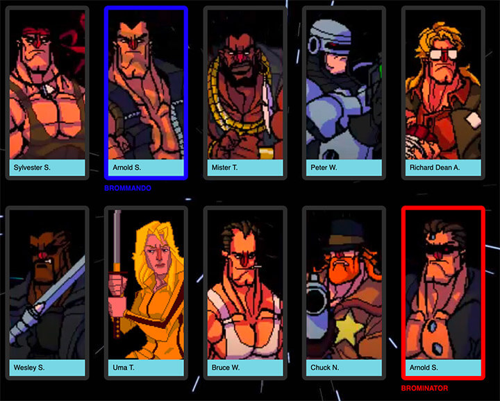

Pour cet exercice, vous devez complétez en CSS une interface permettant à deux joueurs de sélectionner leurs personnages en mode versus à Broforce.
Aperçu du résultat 👇

Matériel
Pen de départ
Couleurs 🎨
#333333
#a1dae7
#0b81fa
#e30002
Requis
Faites en sorte que les bros s'affichent un à côté de l'autre plutôt qu'un en dessous de l'autre.
Sur chacun d'entre eux, ajoutez un espace de 15px de tous les côtés.
Ajoutez ensuite une bordure grise de 10px ayant des coins arrondis de 10px également entourant les bros ainsi que le nom des acteurs ayant servi d'inspiration à leurs créations.
Ajoutez un fond bleu ciel au nom de l'acteur afin de le faire ressortir (attention, l'arrière-plan étoilé ne devrait en aucun cas être visible à l'intérieur de la bordure des bros).
Afin de décoller le contenu du nom de l'acteur des limites de sa boite, ajoutez-y une marge intérieure de 10px de tous les côtés.
Ajoutez une marge de 10px en haut du nom des bros afin de les décoller de la bordure. Faites-les ensuite disparaitre. (Nous les ferons réapparaitre bientôt, ainsi cette marge aura son utilité).
Choisissez vos 2 bros préférés et ajoutez-leur dans leur code HTML les classes player1 et player2.
Faites en sorte que la couleur de bordure des joueurs 1 et 2 soit écrasée par la couleur bleu 🔵 et rouge 🔴 afin de les faire ressortir.
Toujours pour les joueurs 1 et 2, écrasez la règle masquant leurs noms. Attention, l'alignement vertical des bros devra être corrigé suite à cette manipulation.
Mise en ambiance
Notes de cours 📚
Display
block, inline, inline-block, none